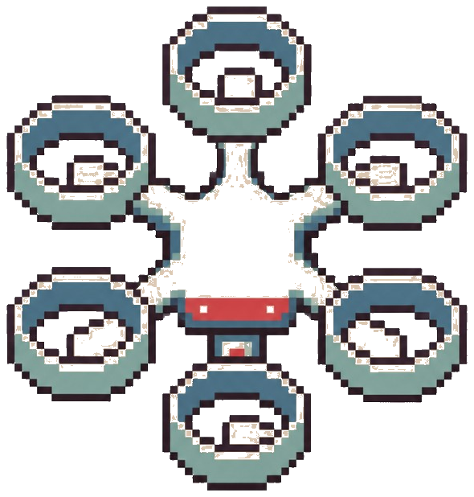
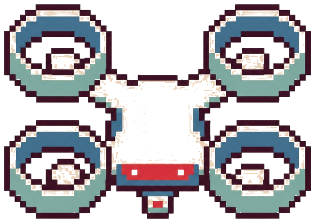

WashU VTOL
Lead Avionics Engineer | Founding Member
Competition aircraft for the Vertical Flight Society Design-Build-Vertical Flight program.
Mission
WashU VTOL was founded in 2025 to compete in VFS Design-Build-Vertical Flight. I joined as a founding member and now lead avionics on a mission-oriented team building competition aircraft from a blank sheet.
With no inherited designs or prior aircraft to lean on, the avionics stack had to be stood up end-to-end: sensing, flight control, RF links, and payload interfaces that hold together under flight-test pressure.
Each cycle is driven by a published rule set with hard limits on weight, altitude, time, and lost-link behavior. The work stays mission-first: close the interfaces, prove them under load, and own the result on the fly-off date.
Flight controller, companion compute, RF links, and payload electronics have to agree before the vehicle earns the right to fly.
Bench bring-up, hardware-in-the-loop checks, hover, transition, and payload ops before claiming a milestone is real.
Lost-link behavior, kill paths, EMI isolation, and weight discipline are part of the mission, not paperwork after the fact.
Close out what the Hexacopter taught us, then rebuild for a harder Search and Rescue mission on a Quadcopter.
Competition Cycles
Same competition | Two vehicles
Hexacopter
First-team vehicle. Brought the avionics stack up from architecture through flight test: hover, VTOL-to-fixed-wing transition, and manual payload delivery.
Prior RFP (PDF)
Quadcopter
Search and Rescue mission: precise VTOL flight, survival-payload delivery and recovery, under hard weight, timing, and lost-link constraints. Fly-off target: April 2027.
2026–27 RFP2026–2027 | Quadcopter
Search and RescueThis cycle rebuilds the aircraft as a Quadcopter for a Search and Rescue mission profile: fly and land precisely, deliver survival payloads where a clean landing zone may not exist, then recover those payloads under time and weight pressure. I authored the system architecture below and own flight controller integration, the RF links, and the payload electronics path.